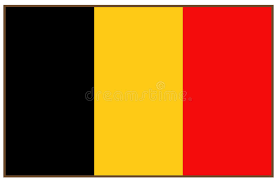
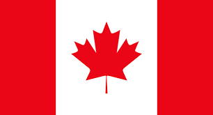
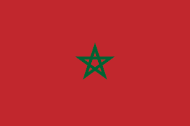
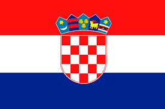

Grupo F
Bélgica

Tudo sobre a Seleção Bélgica em Copas do Mundo
Os belgas ficaram em quarto lugar em 1986. A seleção da Bélgica chegou a participar de seis edições
seguidas da Copa do Mundo (entre 1982 a 2002). Na Eurocopa, o campeonato europeu de seleções, a Bélgica
foi vice-campeã do torneio em 1980 e terceiro lugar em 1972.
Hazard chegou oficialmente ao Chelsea no dia 4 de junho de 2012 e tem sido um dos melhores jogadores da
história
Um dos jogadores mais efetivos da atual década no futebol inglês é Romlelu Lukaku. um dos grandes
jogadores da história.
Um dos mais jogadores belgas é Vicent Kompany tabmbém um grande jogador de todos os tempos
| Nome dos técnicos da Seleção Bélgica em Copas
do Mundo |
| Ano |
Nome |
| 2010 |
Roberto Martínez |
| 2014 |
Marc Wilmots |
| 2018 |
Roberto Martínez |
| 2022 |
Roberto Martínez |
| Bélgica na copa do mundo de 2022 |
| Data/horas |
Adversário |
Estádio |
| (23/11) ás 16hrs |
Bélgica x Canadá |
Al Rayyan |
| (27/11) ás 10hrs |
Bélgica x Marrocos |
Al Thumama |
| (01/12)ás 12rs |
Croácia x Bélgica |
All Rayyan |
Canadá

Tudo sobre a Seleção Canadá em Copas do Mundo
Selecção Canadiana de Futebol, Suas realizações mais significativas são: venceu o Campeonato da CONCACAF de 1985
para se qualificar para a Copa do Mundo FIFA de 1986 e ganhar a Copa Ouro da CONCACAF 2000, se classificando
para a Copa das Confederações de 2001. O Canadá também ganhou uma medalha de ouro nos Jogos Olímpicos de Verão
1904. O Canadá conquistou duas medalhas de ouro nos Jogos da Francofonia de 1989 e 1997 sendo até o momento o
maior vencedor dessa competição. O único ponto do Canadá em competições FIFA foi em um empate de 0x0 com a
seleção brasileira em 2001.
Dwayne Anthony De Rosario (Scarborough, Ontario, Canadá, 15 de maio de 1978), mais conhecido como Dwayne De
Rosario
foi um grande jogador do Canadá alem dele também tem o Paolo Pasquale Peschisolido, mais conhecido por Paul
Peschisolido
(Scarborough, 25 de maio de 1971) é um ex-futebolista e treinador de futebol canadense. Também o acompanha
Tomasz Radzinski (Poznań, 14 de dezembro de 1973) é um ex-futebolista polonês naturalizado canadense.
Jogava como meia-atacante.
| Nome dos técnicos da Seleção Canadá em Copas
do Mundo |
| Ano |
Nome |
| 2022 |
John Herdman |
| Canadá na copa do mundo de 2022 |
| Data/horas |
Adversário |
Estádio |
| (23/11) ás 16hrs |
Bélgica x Canadá |
Al Rayyan |
| (27/11) ás 13hrs |
Croácia x Canadá |
Internacional Khalifa |
| (01/12)ás 12hrs |
Canadá ou Marrocos |
Al Thumama |
Marrocos

Tudo sobre a Seleção Marrocos em Copas do Mundo
Participou das Copas do Mundo de 1970, 1986, 1994, 1998 e participou da de 2018 na Rússia, tendo a melhor
posição
obtida como 11º lugar em 1986.
Nos Jogos da Francofonia conquistou a medalha de ouro em 2001 e obteve uma medalha de prata em
1989 e uma
de bronze em 2005.
Os melhores jogadores do Marrocos são: Kamatcho Após rodar por alguns clubes africanos com relativo
sucesso,
conseguiu se destacar internacionalmente na Copa do Mundo de 1998,
quando marcou dois gols nos três jogos da Seleção Marroquina na competição. Além dele também o acompanha
Abdelmajid Dolmy Jogador recordista de partidas pela Seleção Marroquina, sendo 140 jogos e oito gols
anotados.
Dolmy disputou as Olimpíadas de 1984 e a Copa do
Mundo de 1986, deixando seu nome da história de Marrocos pela sua grande dedicação pela Seleção. e por
conseguinte
Mustapha Hadji O melhor jogador marroquino da história tinha como principais características a
velocidade, bons chutes, e
principalmente a criatividade com a bola nos pés.
Hadji costumava jogar na ponta direita do campo, mas também podia ser uma excelente opção como "camisa 10".
Seu maior título foi a Copa das Nações Africanas de 1976.
| Nome dos técnicos da Seleção da Marrocos em
Copas do Mundo |
| Ano |
Nome |
| 2014 |
Vahid Halilhodžić |
| 2018 |
Hervé Renard |
| 2022 |
Vahid Halilhodzic |
| Marrocos na copa do mundo de 2022 |
| Data/horas |
Adversário |
Estádio |
| (23/11) ás 07hrs |
Marrocos x Croácia |
Al Khor |
| (27/11) ás 10hrs |
Bélgica x Marrocos |
Al Thumama |
| (01/12)ás 12hrs |
Canadá x Marrocos |
Al Thumama |
Croácia

Tudo sobre a Seleção da Croácia em Copas do Mundo
A consagração do futebol croata veio mesmo com o terceiro lugar na Copa do Mundo de 1998. A equipe
que tinha Davor Suker, o artilheiro do mundial e Zvonimir Boban, na época jogador do AC Milan, como
suas principais estrelas, conquistou essa façanha com uma campanha surpreendente, em que derrotaram
a Alemanha nas quartas-de-final por 3 a 0. A Seleção Croata só foi derrotada na semi-final, perdendo
para a anfitriã França por 2 a 1, com dois gols de Lilian Thuram que nunca havia marcado um gol pela
seleção. Na Copa de 2002 e na Eurocopa de 2004, a equipe croata não conseguiu passar da primeira
fase. O mesmo se deu na Copa de 2006, na Alemanha, quando terminou em 22º lugar. A seleção Croata já
disputou 5 Copas do Mundo tendo a melhor posição em 2018, conquistou do 2º lugar após perder a final
contra a França.
Os Melhores jogadores da croacia de todos os tempos são: Igor Stimac (nascido a 6 de Setembro de 1967)
foi um ex-jogador de futebol croata que jogou como defesa central.
Robert Prosinečki (Villingen-Schwenningen, 12 de janeiro de 1969) é um ex-futebolista e treinador de
futebol teuto-croata.
Este jogador ficou famoso por ser o primeiro – e,
ainda hoje, o único – jogador a marcar golos por dois países diferentes nas Copas do Mundo.
acompanha também Robert Jarni (Čakovec, 26 de outubro de 1968) é um
ex-futebolista croata, que jogava, tanto como lateral-esquerdo quanto como médio.
e o mais conhecido de nossos tempos é Luka Modrić (Zadar, 9 de setembro de 1985) é um jogador de futebol,
que joga como médio.
| Nome dos técnicos da Seleção da Croácia em
Copas do Mundo |
| Ano |
Nome |
| 2010 |
Slaven Bilic |
| 2014 |
Niko Kovac |
| 2018 |
Zlatko Dalić |
| 2022 |
Zlatko Dalić |
| Croácia na copa do mundo de 2022 |
| Data/horas |
Adversário |
Estádio |
| (23/11) ás 07hrs |
Marrocos x Croácia |
Al Khor |
| (27/11) ás 13hrs |
Croácia x Canadá |
Internacional Khalifa |
| (01/12)ás 12hrs |
Croácia x Bélgica |
Al Rayyan |